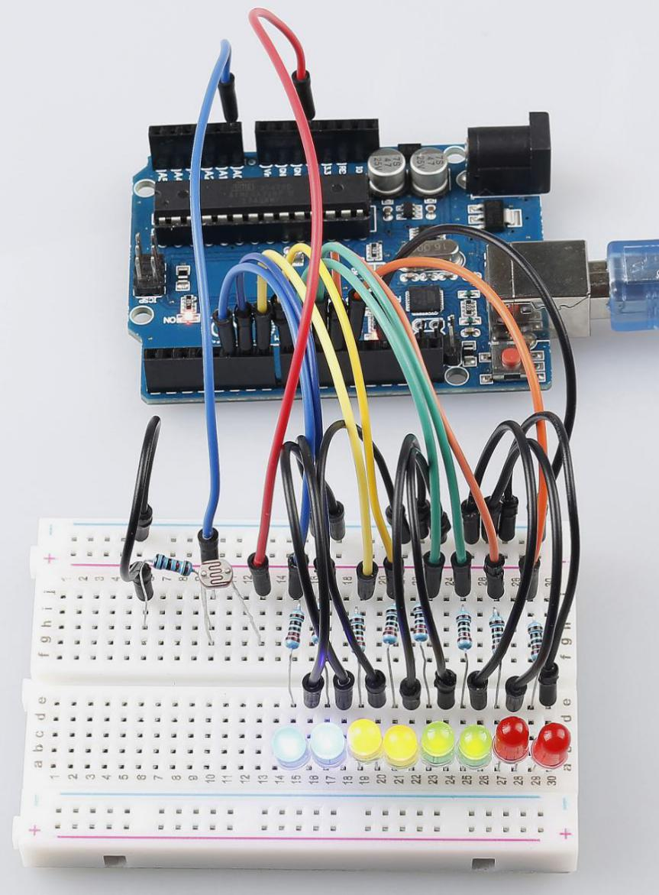
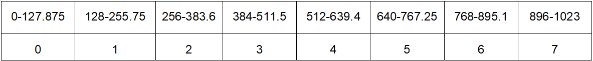

Lesson 6 Photoresistor¶
Introduction¶
In this lesson, you will learn to how to measure light intensity using a photo resistor. The resistance of a photo resistor changes with incident light intensity. If the light intensity gets higher, the resistance decreases; if it gets lower, the resistance increases.


Experimental Principle¶
A photo resistor or photocell is a light-controlled variable resistor. The resistance of a photo resistor decreases with increasing incident light intensity; in other words, it exhibits photo conductivity. A photo resistor can be applied in light-sensitive detector circuits, and light- and darkness-activated switching circuits.
In this experiment, we will use 8 LEDs to show the light intensity. The higher the light intensity is, the more LEDs will light up. When the light intensity is high enough, all the LEDs will be on. When there is no light, all the LEDs will go out.
The schematic diagram:

Experimental Procedures¶
Step 1: Build the circuit
Step 2: Open the code file.
Step 3: Select the Board and Port.
Step 4: Upload the sketch to the board.

Now, shine some light on the photo resistor, and you will see several LEDs light up. Shine more light and you will see more LEDs light up. When you place it in a dark environment, all the LEDs will go out.
{kind=link}
Code¶
Code Analysis 6-1 Set the variables¶
const int NbrLEDs = 8;//8 leds
const int ledPins[] = {5, 6, 7, 8, 9, 10, 11, 12};//8 leds attach to pin
5-12 respectively
const int photocellPin = A0; //photoresistor attach to A0
int sensorValue = 0; // value read from the sensor
int ledLevel = 0; // sensor value converted into LED 'bars'
The 8 LEDs are connected to pin5-pin12, in this code, use a array to store the pins, ledPins[0] is equal to 5, ledPins[1] to 6 and so on.
Code Analysis 6-2 Set 8 pins to OUTPUT¶
for (int led = 0; led < NbrLEDs; led++)
{
pinMode(ledPins[led], OUTPUT);// make all the LED pins outputs
}
Using the for() statement set the 8 pins to OUTPUT. The variable led is added from 0 to 8, and the pinMode() function sets pin5 to pin12 to OUTPUT in turn.
Code Analysis 6-3 Read the analog value of the photoresistor¶
sensorValue = analogRead(photocellPin); //read the value of A0
Read the analog value of the photocellPin(A0) and store to the variable sensorValue.
analogRead(): Reads the value from the specified analog pin. Arduino boards contain a multichannel, 10-bit analog to digital converter. This means that it will map input voltages between 0 and the operating voltage(5V or 3.3V) into integer values between 0 and 1023.
Serial.print("SensorValue: ");
Serial.println(sensorValue); //Print the analog value of the
photoresistor
Use the Serial.print()function to print the analog value of the photoresistor. You can see them on the Serial Monitor.
Serial.print():Prints data to the serial port as human-readable ASCII text. This command can take many forms. Numbers are printed using an ASCII character for each digit. Floats are similarly printed as ASCII digits, defaulting to two decimal places. Bytes are sent as a single character. Characters and strings are sent as is.
Serial.println(): Thiscommand takes the same forms as Serial.print(), but it is followed by a carriage return character (ASCII 13, or ‘r’) and a newline character (ASCII 10, or ‘n’).
Code Analysis 6-4 Map the analog value to 8 LEDs¶
ledLevel = map(sensorValue, 0, 1023, 0, NbrLEDs); // map to the number
of LEDs
Serial.print("ledLevel: ");
Serial.println(ledLevel);
The map() command is used to map 0-1023 to 0-NbrLEDs(8), (1023-0)/(8-0)=127.875
{kind=link}
If sensorValue is 560, then the ledLevel is 4.
map(value, fromLow, fromHigh, toLow, toHigh) re-maps a number from one range to another. That is, a value of fromLow would get mapped to one of toLow, and a value of fromHigh to one of toHigh, values in-between to values in-between, etc.
Code Analysis 6-5 Light up the LEDs¶
for (int led = 0; led < NbrLEDs; led++)
{
if (led <= ledLevel ) //When led is smaller than ledLevel, run the
following code.
{
digitalWrite(ledPins[led], HIGH); // turn on pins less than the level
}
else
{
digitalWrite(ledPins[led], LOW); // turn off pins higher than
}
}
Light up the corresponding LEDs. Such as, when the ledLevel is 4, then light up the ledPins[0] to ledPins[4] and go out the ledPins[5] to ledPins[7].